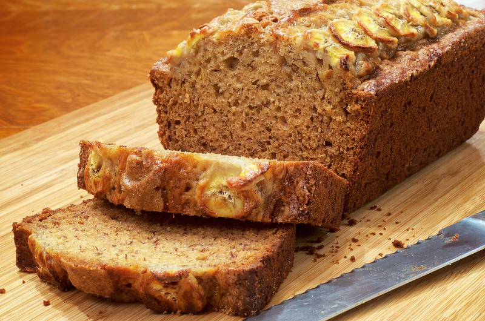

Banana Bread

Ultimate Banana Bread
by Dennis Wilkinson
CC BY-NC-SA 2.0
Description
moist, sweet, and incredibly easy-to-make banana bread that utilizes overripe bananas.
ingredients
- 3 ripe bananas, mashed
- 1/3 cup melted butter
- 3/4 cup sugar
- 1 egg, beaten
- 1 teaspoon vanilla extract
- 1 teaspoon baking soda
- 1 pinch of salt
- 1.5 cups all-purpose flour
Steps
- Preheat your oven to 350°F (175°C) and grease a loaf pan.
- In a mixing bowl, mash the ripe bananas with a fork until smooth.
- Stir the melted butter into the mashed bananas.
- Mix in the sugar, beaten egg, and vanilla extract.
- Sprinkle the baking soda and salt over the mixture and stir.
- Add the flour last, mixing lightly just until the flour disappears.
- Pour the batter into your prepared loaf pan.
- Bake for 50 to 60 minutes, or until a toothpick inserted into the center comes out clean.